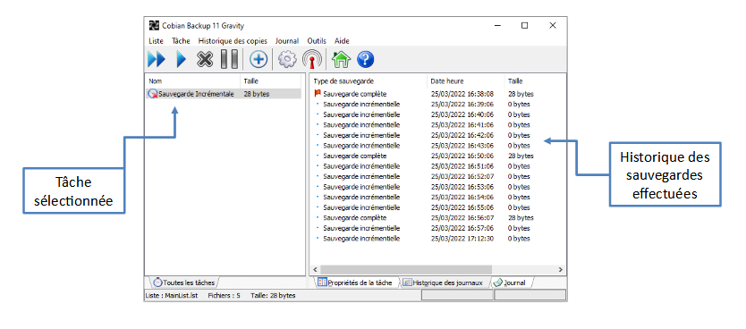

Installation de sauvegardes à l'aide du programme Cobian Backup permettant de faire différents types de sauvegarde comme la sauvegarde incrémentielle, différentielle ou bien complète.
Sauvegarde différentielle : consiste à restaurer la dernière sauvegarde complète en date, puis toutes les différences constatées sur les fichiers modifiés depuis.
Sauvegarde incrémentielle : permet de créer une nouvelle sauvegarde seulement si il y'a des modifications avec la précédente
Sauvegarde complète : permet de sauvegarder, en copiant l'ensemble des données du fichier
Cobian Backup permet aussi de chiffrer et compresser nos fichiers
Toutes actions réalisé sera indiqué dans le journal des log donc on pourra voir si la sauvegarde s'est bien effectué ou si il y'a une erreur.
